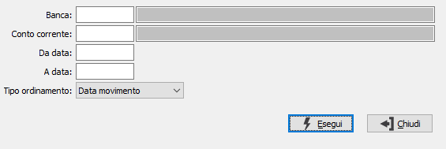

Stampa estratto conto
Il programma consente di effettuare una stampa dell'estratto conto movimenti in base a determinati criteri di selezione.

BANCA: identifica il codice banca per cui si vuole effettuare la stampa dell'estratto conto. Sul campo sono attive le funzioni di ricerca sulla tabella stessa.
CONTO CORRENTE: identifica il conto corrente, relativo alla banca inserita, per cui si vuole effettuare la stampa dell'estratto conto. Sul campo sono attive le funzioni di ricerca sulla tabella stessa.
DA DATA: indicare l’eventuale data da cui si desidera iniziare l'elaborazione dei movimenti. Confermando a vuoto, l’analisi inizia con il primo movimento valido.
A DATA: indicare l’eventuale data a cui si desidera terminare l'elaborazione dei movimenti. Confermando a vuoto, l’analisi termina con l’ultimo movimento valido.
TIPO ORDINAMENTO: definisce il tipo di ordinamento dei movimenti in stampa. Valori ammessi: per data movimento oppure per data valuta.
Confermando tramite pressione del pulsante Esegui, viene avviata la selezione e prodotto il report di stampa.